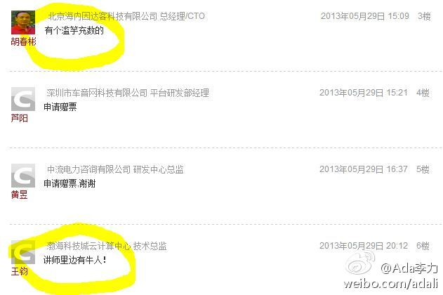

微信上被这个招聘信息刷屏了： 好友公司托我招人，iOS和Android高级工程师，大规模服务端架构师。美金工资，高期权，工作地点在杭州or硅谷。推荐者成功者送google glass一副 联系：***@gmail.com - 大家注意防盗防骗
原作者是@1968金鹏远 //@龚文祥:这个原作者是谁？此人是懂微博且有运营经验的@成功营销:【一线微博运营者的50条总结】运营目的是信息传播，最终目的是精准到达，中间承担重要角色的是引爆点 | 以产品传播诉求为维度划分，关键是了解品牌故事和保证栏目内容的延续性；以粉丝分层划分内容，目的是从内容上把粉丝相对区隔，保证多个圈层覆盖和引爆 | 优质产品、个性化服务、娱乐精神是必须的。
回复@1968金鹏远:无功不受禄。 //@1968金鹏远:不是我 //@Ada李力:原作者是@1968金鹏远 //@龚文祥:这个原作者是谁？此人是懂微博且有运营经验的@成功营销:【一线微博运营者的50条总结】运营目的是信息传播，最终目的是精准到达，中间承担重要角色的是引爆点 | 以产品传播诉求为维度划分，关键是了解品牌故事和保证栏目内容的延续性；以粉丝分层划分内容，目的是从内容上把粉丝相对区隔，保证多个圈层覆盖和引爆 | 优质产品、个性化服务、娱乐精神是必须的。
回复@HarryInc:列入名企的技术总监，架构师给俱乐部会员做演讲。想申请这个活动的企业可联系@CTO俱乐部 网页链接 //@HarryInc:怎么进名企法？ 谁来演讲@Ada李力:@CTO俱乐部 今天的走进名企活动很受欢迎，场地只能容纳40人，有170多人报名。 我在这里:北京·兆维华灯大厦
欢迎欢迎。//@袁斌_AgileDo:我报名了，但是在40名之后，下次一定提早报名！@Ada李力:@CTO俱乐部 今天的走进名企活动很受欢迎，场地只能容纳40人，有170多人报名。 我在这里:北京·兆维华灯大厦
@CTO俱乐部 会员中做过讲师的人会获得6月5-7日的云计算大会赠票， 赠票名单在网页链接 有人评论说有讲师滥竽充数，也不说名字，有人说讲师里有牛人，同样不说名字。实名也有坏处，吐槽都不方便了。 